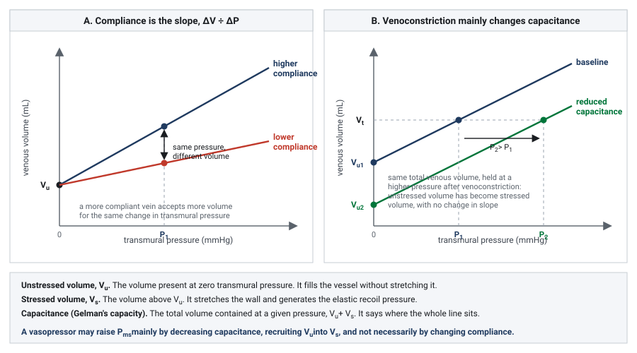

Module I7
Interface III: capillaries to the right atrium
Module I5 handed off at the arteriolar outlet and Module I6 took the blood through the microcirculation. This module picks it up at the far side of the capillary and follows it to the right atrium, which is the third of the four interfaces named in Module I1. It is the interface with the largest volume, the lowest pressures, the smallest gradient, and by a wide margin the most misread pair of numbers in critical care.
Almost everything a clinician is taught about this interface concerns its downstream half: the venous return curve, the plateau, the resistance, and what a central venous pressure reading is worth. That material is Module I8, and it is written. What I8 assumes, and does not teach, is the upstream half. It begins with a reservoir that already exists, holding a stressed volume that has already arrived. This module is about how the reservoir gets filled and what it is made of: the capillary wall that the fluid has to cross to reach it, the physics that determines how much of an infused litre stays inside the vessels, the difference between a vein's compliance and its capacity, and the fact that the reservoir is not one compartment but at least two, only one of which can be recruited.
The reason to spend a module on this is not completeness. It is that three of the commonest bedside decisions in shock, giving a fluid bolus, starting a vasopressor, and interpreting a rising filling pressure, all turn on quantities that live at this interface and nowhere else. A clinician who has the venous return curve from Module N4 and the two-curve intersection from Module N5 can predict what happens if Pms rises. Without the physiology of this interface they cannot predict whether the 500 mL they just ordered will raise it.
The interface, and where its upstream pressure physically lives
The third interface takes the same hydraulic form as the other three, the form derived in Module I1 as Principle 3.

Three features of this interface distinguish it from the two upstream of it, and each one has a consequence that recurs for the rest of the module.
The gradient is tiny. Interface I dissipates most of the systemic pressure drop and Interface II dissipates most of the rest. What is left for Interface III is a few millimetres of mercury. In health that gradient is roughly 8 to 10 mmHg upstream against a right atrial pressure near zero, and in a ventilated patient on vasopressors both ends of it sit considerably higher. Because the gradient is small, the resistance has to be small as well, and any process that raises the resistance eats a large fraction of a small number. That is the arithmetic behind the observation in I8 that caval compression is a hemodynamic catastrophe while an equivalent proportional narrowing of the aorta would be tolerated.
The downstream pressure is also the tissue's outflow pressure. Every other interface has a downstream pressure that belongs to the circulation alone. This one has a downstream pressure that organs have to drain into. Rola and colleagues make this the defining feature of Interface III in their four-interface paper: a rising central venous pressure is not only a preload marker, it is tissue afterload, impeding microvascular clearance and promoting interstitial oedema even when the macrocirculatory numbers look acceptable. The clinical development of that idea, venous congestion as an organ injury mechanism and the ultrasound tools used to detect it, belongs to the Expert pathway. What belongs here is the physiology that makes it possible, which is that the capillary sits between two pressures and its behaviour depends on both.
The upstream pressure has an address. Pms is usually introduced as a whole-circulation abstraction, the pressure everywhere if flow stopped and pressures equilibrated. That definition is correct and it hides something useful. Rothe, in the review that remains the standard reference on the measurement, points out that the mean circulatory filling pressure is in practice an estimate of the distending pressure in the small veins and venules, because those vessels contain most of the blood in the body and comprise most of the vascular compliance. In a compliance-weighted average, the compartment holding most of the volume at the highest compliance dominates the result. So Pms is not a property of the circulation in general. It is very nearly the pressure in the venules and small veins, and when a drug or a reflex changes it, that is where the change happened.
That localisation matters because it separates two things that the equation above runs together. The pressure that drives venous return is generated in the small veins and venules. The resistance that opposes it sits in the venae cavae and the large intrathoracic veins, as I8 sets out in detail. Volume and resistance live in different parts of the venous system, so an intervention that changes one need not change the other, and a bedside measurement that changes could be reporting on either.
The capillary as the upstream boundary
Blood arrives at the reservoir by crossing the capillary bed, and some of it does not arrive, because the capillary wall leaks. How much leaks, and whether any of it comes back, is the question that determines what a fluid bolus actually does.
Ernest Starling posed and answered the first version of this question in 1896, in a paper whose logic still holds even though its conclusion has been revised. He showed that the capillary wall behaves as a semipermeable membrane, that plasma proteins exert an osmotic pressure across it, and that this osmotic pressure opposes the hydrostatic pressure driving fluid out. Fluid movement across the wall is therefore the balance of a hydrostatic term and an oncotic term, each acting in both directions.
Take the terms one at a time, because each is worth more than its symbol suggests.
Pc, capillary hydrostatic pressure, is the only term in the expression that the two neighbouring interfaces control directly. It falls along the length of the capillary, and its value at any point is set by the balance of arteriolar and venular resistance on either side. This is the physiologic link between Interface II and Interface III, and it runs in both directions. An analogous arrangement governs the renal glomerulus, where the balance of afferent and efferent arteriolar resistance sets glomerular capillary pressure largely independently of renal blood flow. Arteriolar constriction lowers capillary pressure and reduces filtration. A rise in venous pressure raises capillary pressure and increases it, which is precisely the mechanism by which a high central venous pressure produces oedema without any change in the capillary wall itself.
Pi, interstitial hydrostatic pressure, is small and, in several tissues, negative. Aukland and Reed's review of interstitial and lymphatic mechanisms reports a broad consensus of slightly negative control pressures in soft connective tissue, in the range of 0 to −4 mmHg, with zero or slightly positive pressures elsewhere. A negative interstitial pressure adds to the outward gradient rather than opposing it, which is one reason the resting state of most capillary beds is net filtration rather than balance.
σ, the reflection coefficient, is the term that carries the whole clinical argument about colloids. If the wall excluded protein completely, σ would be 1 and the full plasma oncotic pressure would oppose filtration. Real capillaries have a σ below 1, and it varies enormously by tissue. Continuous capillaries in muscle and skin are relatively tight, hepatic sinusoids are almost freely permeable to albumin, and inflamed capillaries lose selectivity. A colloid infused into a bed with a low reflection coefficient does not stay in the vessel and does not exert the oncotic pressure the label implies.
Kf, the filtration coefficient, is conductivity multiplied by surface area, which means it is not a fixed property of the endothelium. Recruiting previously unperfused capillaries raises the surface area and therefore raises Kf with no change in the wall at all. This is a direct link back to the functional capillary density that Module I6 treats as the lesion of septic shock, and it explains part of why the same capillary pressure produces different amounts of oedema in different patients.
The revised Starling principle
The classical teaching takes the equation above and adds a prediction. Capillary hydrostatic pressure falls from the arteriolar to the venular end while plasma oncotic pressure stays roughly constant, so the two lines cross somewhere in the middle. Upstream of the crossing point the balance favours filtration and downstream of it the balance favours reabsorption, and the two roughly cancel, with the small residual carried away as lymph. It is a satisfying picture, it appears in every textbook, and it is wrong in a way that changes practice.
![Two panel diagram. Panel A shows the classical model as a capillary with outward filtration arrows at the arteriolar end and inward reabsorption arrows at the venular end, above a graph in which a falling capillary hydrostatic pressure line crosses a constant plasma colloid osmotic pressure line at a marked predicted reversal point. Panel B shows the revised glycocalyx model as a capillary lined by a glycocalyx layer, with small outward filtration arrows along its whole length including the venular end, no inward arrows, and filtered fluid passing from the interstitium into the lymphatics.](img/i7-starling-revised.svg)
The semipermeable layer is the glycocalyx, not the vessel wall
The endothelial surface carries a hydrated mesh of membrane-bound proteoglycans and glycosaminoglycans, the glycocalyx, and this layer rather than the endothelial cell wall as a whole is what excludes plasma protein. Levick and Michel's 2010 review of microvascular fluid exchange is the statement of the resulting model, and its central structural insight concerns geometry. Water crosses the endothelium mainly through breaks in the junctional strands of the intercellular cleft, and those breaks are narrow. Fluid moving through a narrow break moves fast, and the high local velocity sweeps protein out of the small space immediately beneath the glycocalyx faster than it can diffuse back in.
The consequence is that the space under the glycocalyx is protein-poor and stays protein-poor as long as any filtration is occurring. The oncotic pressure that opposes filtration is therefore not plasma oncotic pressure minus interstitial oncotic pressure. It is plasma oncotic pressure minus the oncotic pressure of the subglycocalyx space, which is a very different and much larger quantity. Levick and Michel state the experimental confirmation plainly: the effect of interstitial colloid osmotic pressure on transvascular flow is much less than the conventional Starling principle predicts.
The no-absorption rule
That single structural fact removes the mechanism by which reabsorption was supposed to happen. If the oncotic gradient across the glycocalyx does not fall as interstitial protein accumulates, then lowering capillary hydrostatic pressure cannot flip the sign of the flow, it can only reduce its magnitude. Woodcock and Woodcock, translating the model into fluid prescribing, give it the name that has stuck: the oncotic pressure difference across the glycocalyx opposes, but does not reverse, the filtration rate. This is the no-absorption rule.
Levick and Michel put the same conclusion in physiologic terms. Sum-of-forces evidence and direct observation show that microvascular absorption is transient in most tissues, and slight filtration prevails in the steady state, even in venules. Transient is the operative word. A sudden fall in capillary pressure, as after a haemorrhage, does produce genuine absorption for a period, and that transcapillary refill is a real and important compensatory mechanism. What does not happen is a standing state in which the venular half of every capillary bed reclaims what the arteriolar half filtered.
Two categories of exception are worth knowing because they prove the rule rather than weakening it. Levick and Michel identify sustained fluid absorption in specialised regions, notably the renal peritubular capillaries and the intestinal mucosa, and the mechanism is not a reversal of Starling forces. It is local epithelial secretion, which continuously flushes protein out of the interstitium and into the lymphatics, keeping the interstitial protein concentration low enough that absorption can persist. Absorption is sustained by doing work, not by a favourable pressure balance.
The return route is lymphatic
If filtered fluid is not reabsorbed, it has to leave the interstitium some other way, and the only other way is the lymphatic system. This is the part of the revised model that most changes how a clinician should picture a fluid bolus. Fluid that crosses the capillary wall does not come back across it. It travels through the interstitium, enters the initial lymphatics, and returns to the circulation at the thoracic duct, on a timescale of hours rather than minutes.
Aukland and Reed describe how that system defends the interstitium. There is no central sensor for total extracellular volume and no neural control of individual interstitial compartments. Instead each tissue autoregulates its own interstitial volume locally, by automatic adjustment of the transcapillary Starling forces and of lymph flow. Two buffers do most of the work. Interstitial hydrostatic pressure rises as fluid accumulates, which opposes further filtration, and interstitial protein is progressively washed out as filtration increases, which raises the effective oncotic opposition. Both buffers are finite. Once interstitial compliance rises, which it does steeply beyond a certain volume, the hydrostatic buffer stops working and further filtration produces frank oedema for very little additional pressure.
Levick and Michel add a mechanism for how the wall fails outright in inflammation. Modelled as a two-pore system, the endothelium has a large population of small pores and a small population of large ones, and relatively small increases in the number of large pores dramatically increase transvascular flow. This is why septic capillary leak is not a graded loss of selectivity but something closer to a threshold, and why a colloid strategy that works in an intact circulation performs so differently in sepsis.
The part that is still argued
The revised principle is now the mainstream account and it has serious critics, which is worth knowing before meeting the objection secondhand. Dull and Hahn argue that the glycocalyx is not the clinically important permeability barrier the model requires. Their case rests on several strands. Circulating glycocalyx breakdown products originate overwhelmingly from the 99.6 to 99.8 percent of the endothelial surface that is not involved in transendothelial passage of water and protein, so their concentration reports on shedding somewhere rather than on the junctional pathway that carries the flow. Measurements of glycocalyx thickness by imaging correlate poorly with those fragment concentrations. Calculations of the hydraulic resistance a layer of the imaged thickness should produce are difficult to reconcile with measured hydraulic conductivity, which constrains the functional layer to something closer to 100 to 150 nanometres than to the half-micron seen on imaging. And two physiologic observations sit awkwardly with a strict no-absorption rule: transcapillary refill after haemorrhage, and the fact that 20 percent albumin demonstrably recruits fluid from the extravascular space.
Michel, Woodcock and Curry have answered by extending rather than abandoning the model, and the exchange is instructive about what is actually in dispute. Nobody argues that the glycocalyx does not exist or that it is not shed. Rehm and colleagues demonstrated shedding directly in humans, measuring syndecan-1 and heparan sulfate in arterial blood during aortic surgery and finding transient increases of 42-fold and 10-fold in syndecan-1 and heparan sulfate respectively after global ischaemia with circulatory arrest, 65-fold and 19-fold after regional ischaemia of the heart and lungs on cardiopulmonary bypass, and 15-fold and 3-fold after infrarenal ischaemia, with electron microscopy confirming the structural loss. The dispute is over whether that shedding is what makes capillaries leak, and over how absolute the no-absorption rule is.
The clinically load-bearing content survives the dispute intact, which is the useful way to hold it. Steady-state reabsorption at the venular end is not a mechanism you can rely on. Filtered fluid returns by lymph. Colloid oncotic pressure opposes filtration and cannot pull interstitial fluid back in any sustained way. And the fraction of an infusion that remains intravascular depends on the capillary pressure it is infused against and how permeable that capillary wall ends up being.
Where a fluid bolus actually goes
Put the revised principle together with the arithmetic of the reservoir and the behaviour of a fluid bolus stops being surprising. An infused litre of crystalloid has to do three things in sequence before it can raise cardiac output. It has to stay intravascular. Of the portion that stays intravascular, it has to distend vessels rather than fill them, which is to say it has to become stressed volume rather than unstressed volume. And the resulting rise in Pms has to exceed the rise in right atrial pressure it provokes, or the gradient does not widen. Each step discards a large fraction, and the losses multiply.
Hahn's review of volume kinetics quantifies the first step. Crystalloid distributes to the peripheral compartment slowly rather than instantaneously, which produces a plasma dilution during the infusion 50 to 75 percent greater than immediate distribution would give. That transient is why a bolus works at all, and it is also why the effect is transient. Two further findings from the same body of work matter at the bedside. A fall in arterial pressure at induction of anaesthesia slows distribution further, and renal clearance of infused fluid during surgery falls to only 10 to 20 percent of the value in conscious volunteers, so the fluid that has distributed is not being cleared either.
Two clinical studies bracket the timescale. Aya and colleagues gave 250 mL over five minutes to 26 postoperative patients and modelled the response, finding that the maximal effect on cardiac output arrives at about 1.2 minutes after the end of the infusion and that the hemodynamic effect of the fluid challenge has dissipated by ten minutes, in fluid responders and non-responders alike. Nunes and colleagues asked the same question over a longer window in twenty patients with circulatory shock beyond the initial resuscitation phase, twenty of whom had received vasopressors for more than six hours and fourteen of whom had septic shock. A 500 mL crystalloid bolus over thirty minutes raised cardiac index from 3.03 (S.D. +/- 0.64) to 3.58 (S.D. +/- 0.66) L/min/m2, and then it decayed: 3.23 (S.D. +/- 0.65) at sixty minutes and 3.12 (S.D. +/- 0.64) at ninety minutes, each significantly below the peak. In the thirteen patients who met the definition of a responder the pattern was identical, a rise to 3.57 (S.D. +/- 0.65) followed by decay to 3.06 (S.D. +/- 0.70) by ninety minutes.
Compliance and capacitance are not the same quantity
The reservoir language used from Module N4 onward, stressed volume and unstressed volume, describes one pressure-volume relationship but more than one property of it. Those properties are often given overlapping names, which is where the confusion starts. Gelman uses capacity for the volume contained at a particular distending pressure and compliance for the change in volume produced by a change in pressure. Magder uses capacitance in essentially the same hydraulic sense as Gelman's capacity: the total volume the vasculature contains at a given pressure. The terminology differs. The distinction from compliance does not.
Start with compliance. It is the slope of the volume-pressure relationship:
A highly compliant vessel accepts a large change in volume for a small change in transmural pressure. The systemic venous circulation is built for exactly that purpose. Gelman estimates that veins contain roughly 70 percent of the circulating blood volume and are about thirty times more compliant than arteries. Magder gives a similar order of magnitude for the small veins and venules. That is why a large change in venous volume can occur with surprisingly little movement in venous pressure.
The second property is the unstressed volume. A vein does not begin generating elastic recoil pressure the moment blood enters it. Some volume is required simply to give the vessel its resting shape. The volume present when transmural pressure is zero is the unstressed volume, VU. Volume beyond that point stretches the wall and is therefore stressed volume, VS. It is the stressed component that generates the recoil pressure available to drive venous return. In the circulation with little sympathetic activation, only about 25 to 30 percent of total blood volume is stressed. The rest is unstressed reserve.
That leaves capacitance. In Magder's hydraulic usage, capacitance is the total contained volume at a given pressure, including both stressed and unstressed volume. Gelman calls the corresponding quantity venous capacity. Unlike compliance, it is not the slope of the relationship. It describes where the whole pressure-volume relationship sits.

That distinction is what makes venoconstriction worth separating from simple stiffening. A venoconstrictor does not have to make the venous wall substantially less compliant to raise its distending pressure. It can instead decrease capacitance, shifting the pressure-volume relationship so that less of the existing blood volume remains unstressed and more becomes stressed. Total blood volume has not changed, but the fraction generating elastic recoil pressure has. Gelman describes the same effect as a decrease in venous capacity without a change in compliance.
In the simplified lumped venous model, the consequence can be written directly:
Pms can therefore rise because stressed volume increases, because compliance falls, or through some combination of the two. What sympathetic venoconstriction often does is the first: it recruits volume that was already present but unstressed. Magder describes this as an internal autotransfusion. Extreme sympathetic activation can recruit a surprisingly large volume within seconds, and withdrawal of that tone can return it to the unstressed compartment just as quickly.
| Quantity | What it is on the pressure-volume line | What moves it | Effect on the venous return curve |
|---|---|---|---|
| Compliance | The slope, ΔV/ΔP | Vessel wall mechanics, smooth muscle tone, structural change with age or disease | Determines how much pressure changes when volume changes |
| Unstressed volume, VU | Volume at zero transmural pressure | Venomotor tone, sympathetic activation, venodilators, anaesthetic induction | Defines how much blood is stored without generating recoil pressure |
| Stressed volume, VS | Total volume minus VU | Fluid gain/loss and recruitment from VU | Generates the elastic recoil pressure underlying Pms |
| Capacitance/Capacity | Total volume contained at a specified pressure | Mainly shifts in VU, but also changes in compliance | Describes how much blood the reservoir can contain at that pressure |
The two mechanisms can also interact rather than simply add. In septic shock, Adda and colleagues found that the rise in Pms produced by passive leg raising was greater at a higher norepinephrine dose than at a lower one, and the combined effect exceeded what would have been expected from adding the independent effects of norepinephrine and volume recruitment. Their interpretation was that volume entering a more constricted venous reservoir is converted more effectively into stressed volume. Whether this also reflects a change in effective venous compliance cannot be determined from Pms alone, but the finding is a useful reminder that the pressure-volume relationship is more complex than a rigid parallel shift.
The anatomy of the reservoir
Everything so far has treated the venous system as one container with one compliance. It is not. It is a set of beds in parallel with markedly different properties, and the difference between them is what makes recruitment possible at all.
![Diagram of capillary outflow dividing into two parallel compartments before reaching the venae cavae and right atrium. The upper compartment, drawn large, is the splanchnic veins of liver, gut and spleen, labelled high compliance, large unstressed volume, slow to drain, and the recruitable compartment. The lower compartment, drawn small, is the non-splanchnic veins of muscle, skin and kidney, labelled lower compliance, fast to drain, little reserve to give. An arrow marks that sympathetic venoconstriction acts mainly on the splanchnic compartment, shifting unstressed volume into the stressed compartment.](img/i7-two-compartment-reservoir.svg)
The splanchnic bed is the recruitable compartment
The classical demonstration is Greenway and Lister's, who measured hepatic volume, splenic weight and intestinal volume directly in anaesthetised cats while removing or infusing blood. Their result is the reason the splanchnic bed is called a reservoir rather than merely a compliant bed. With haemorrhage of 15 percent of blood volume, the liver contributed 21 percent of the volume removed, the gastrointestinal tract 22 percent and the spleen 19 percent, a total splanchnic contribution of 62 percent. Running the experiment the other way, with infusions of 10 to 34 percent of blood volume, the liver pooled 20 percent of the infused volume, the gastrointestinal tract 40 percent and the spleen 6 percent, a total of 66 percent. In that experimental preparation, roughly two thirds of the volume added to or removed from the circulation was absorbed or supplied by the splanchnic bed.
Deschamps and Magder put a number on the recruitment mechanism in dogs, by measuring regional blood volumes and unstressed volumes at carotid sinus pressures of 200 and 50 mmHg, which is to say with the baroreflex switched off and on. Dropping carotid sinus pressure from 200 to 50 raised arterial pressure from 58.7 (S.D. +/- 4.1) to 104.6 (S.D. +/- 6.4 mmHg), and it moved the splanchnic reservoir sharply. Splanchnic blood volume fell from 28.3 (S.D. +/- 1.9) to 19.3 (S.D. +/- 1.2 mL/kg), and splanchnic unstressed volume fell from 19.6 (S.D. +/- 1.4) to 6.3 (S.D. +/- 2.1 mL/kg). Splanchnic venous resistance and the splanchnic time constant of drainage both fell while splanchnic venous compliance rose, and the fraction of blood flow going to the peripheral beds fell from 69.8 (S.D. +/- 3.8) to 55.8 (S.D. +/- 3.9 percent).
The unstressed volume figure is the one to carry away. A reflex, with no drug and no fluid, converted more than 13 mL/kg of splanchnic unstressed volume into stressed volume. A simple weight-based extrapolation to an adult would approach a litre of blood shifted from a compartment that was contributing nothing to venous return into one that contributes directly, although this is illustrative rather than a human measurement. This is the physiologic reserve that a healthy person deploys on standing up and that a patient in early shock is already spending, and it is the reason a patient can lose a substantial volume before any pressure changes.
The same study contains a pharmacologic warning. Phentolamine at low carotid sinus pressure only partially reversed the fall in splanchnic capacitance, whereas ganglionic blockade with hexamethonium abolished it completely. Alpha-adrenergic receptor activation is therefore only partly responsible for reflex venoconstriction, which means that an alpha agonist does not simply reproduce what the reflex was doing, and an alpha blocker does not simply undo it.
Fast and slow compartments, and why the distinction has consequences
Gelman's two-compartment reading makes the functional difference explicit. The splanchnic veins are the compliant compartment and the non-splanchnic veins, draining muscle, skin and kidney, are the non-compliant one. Because a drainage time constant is the product of resistance and compliance, the compliant compartment is also the slow one, and the difference is large: Module I8 gives the time constants as roughly 20 to 24 seconds for the splanchnic bed against 4 to 6 seconds for the periphery, and works out the consequence for the resistance term.
The consequence relevant here is upstream of that. Because the beds are in parallel and drain at different rates, the fraction of cardiac output sent to each one determines how much blood is sitting in the slow compartment at any moment. Gelman draws out the point that makes this counterintuitive: a change in small artery and arteriolar resistance can affect venous return in opposite directions, depending on which compartment the redistributed flow goes to. Constricting arterioles that supply the splanchnic bed diverts flow to fast-draining beds and increases venous return. Constricting arterioles that supply the periphery does the reverse. The same drug, acting on the same receptor, at the same arterial pressure, and the venous consequence depends entirely on where the receptors are.
What the reservoir looks like when its reserve is gone
Two states at opposite ends of the same axis are worth naming, because they present with similar numbers and require opposite management.
In the first, the reservoir is full of unstressed volume that has not been recruited. This is the anaesthetised or deeply sedated patient, the patient with a high spinal block, the patient with autonomic failure. Total blood volume may be entirely normal, the stressed fraction is small, Pms is low, and the venous return curve sits far to the left. If the patient is fluid responsive, fluid can increase flow here, and a vasoconstrictor may achieve a similar increase in stressed volume more rapidly by recruiting blood that is already intravascular, without requiring a litre to be infused or leaving additional interstitial water behind. The fact that a small dose of an alpha agonist can restore blood pressure and cardiac output in a patient who has lost no blood at all is not a trick of arterial tone. It is the reservoir being asked to give back what sedation took from it.
In the second, the reserve has already been spent. This is the patient in prolonged vasodilatory shock on a substantial norepinephrine dose. The recruitable splanchnic reserve may already be substantially depleted, the unstressed compartment may be much smaller than it was earlier in shock, and stressed volume is being supported by continuous vasopressor therapy. Here the next dose increment buys much less than the last one did, and a fluid bolus is being added to a system whose capillary pressures are already high, which by the revised Starling principle means that a large fraction of it will filter and stay filtered. This is the physiologic content behind the clinical observation that late fluid in septic shock produces oedema and very little flow, and it does not require any appeal to a leaky capillary beyond what a raised capillary hydrostatic pressure would predict on its own.
What this interface hands to the next module
Three things arrive at I8 from here that the venous return curve takes as given. The upstream pressure has an address, in the small veins and venules, so that a change in Pms is a statement about a specific compartment rather than about the circulation in general. The reservoir has an anatomy, a compliant recruitable splanchnic bed and a stiffer peripheral one in parallel, which is what allows the resistance to venous return to change through redistribution rather than through any vessel changing calibre. And the volume that reaches the reservoir is not the volume infused, because the capillary wall filters continuously, does not reabsorb in the steady state, and returns what it filters only by lymph and only over hours.
Those three facts are what make the venous return curve a curve about a real system rather than an accounting identity, and they are what allows it to be used the way Magder's bedside translation of the Guyton framework uses it, as a means of asking which of a small number of quantities actually changed. The intercept is stressed volume divided by compliance, and both terms have now been located. The slope reflects the effective resistance to venous return that emerges from the distribution of flow across parallel beds with different compliances and drainage time constants. Only the plateau belongs entirely to the downstream half of the interface, and it is the first thing Module I8 takes up.
What remains unanswered here is the question this interface is usually asked at the bedside, which is what to make of the number at its downstream end. That question is genuinely hard, because right atrial pressure is simultaneously the backpressure in the equation above and the outcome of the interaction between this interface and the heart, and Module I8 takes it apart on those terms. Module I11 covers what a right atrial pressure reading can and cannot support at the bedside, Module I14 reads the waveform it comes from, and the congestive consequences of a chronically raised downstream pressure, which is where this interface does its clinical damage, are left to the Expert pathway.
References
- Rola P, Kattan E, Siuba MT, Haycock K, Crager S, Spiegel R, Hockstein M, Bhardwaj V, Miller A, Kenny JE, Ospina-Tascón GA, Hernandez G. Point of view: a holistic four-interface conceptual model for personalizing shock resuscitation. J Pers Med. 2025;15(5):207. doi:10.3390/jpm15050207. Free full text.
- Rothe CF. Mean circulatory filling pressure: its meaning and measurement. J Appl Physiol (1985). 1993;74(2):499-509. doi:10.1152/jappl.1993.74.2.499.
- Starling EH. On the absorption of fluids from the connective tissue spaces. J Physiol. 1896;19(4):312-326. doi:10.1113/jphysiol.1896.sp000596. Free full text.
- Aukland K, Reed RK. Interstitial-lymphatic mechanisms in the control of extracellular fluid volume. Physiol Rev. 1993;73(1):1-78. doi:10.1152/physrev.1993.73.1.1.
- Levick JR, Michel CC. Microvascular fluid exchange and the revised Starling principle. Cardiovasc Res. 2010;87(2):198-210. doi:10.1093/cvr/cvq062.
- Woodcock TE, Woodcock TM. Revised Starling equation and the glycocalyx model of transvascular fluid exchange: an improved paradigm for prescribing intravenous fluid therapy. Br J Anaesth. 2012;108(3):384-394. doi:10.1093/bja/aer515.
- Michel CC, Woodcock TE, Curry FE. Understanding and extending the Starling principle. Acta Anaesthesiol Scand. 2020;64(8):1032-1037. doi:10.1111/aas.13603.
- Dull RO, Hahn RG. The glycocalyx as a permeability barrier: basic science and clinical evidence. Crit Care. 2022;26(1):273. doi:10.1186/s13054-022-04154-2. Free full text.
- Rehm M, Bruegger D, Christ F, Conzen P, Thiel M, Jacob M, Chappell D, Stoeckelhuber M, Welsch U, Reichart B, Peter K, Becker BF. Shedding of the endothelial glycocalyx in patients undergoing major vascular surgery with global and regional ischemia. Circulation. 2007;116(17):1896-1906. doi:10.1161/CIRCULATIONAHA.106.684852.
- Hahn RG. Volume kinetics for infusion fluids. Anesthesiology. 2010;113(2):470-481. doi:10.1097/ALN.0b013e3181dcd88f.
- Aya HD, Ster IC, Fletcher N, Grounds RM, Rhodes A, Cecconi M. Pharmacodynamic analysis of a fluid challenge. Crit Care Med. 2016;44(5):880-891. doi:10.1097/CCM.0000000000001517.
- Nunes TS, Ladeira RT, Bafi AT, de Azevedo LC, Machado FR, Freitas FG. Duration of hemodynamic effects of crystalloids in patients with circulatory shock after initial resuscitation. Ann Intensive Care. 2014;4:25. doi:10.1186/s13613-014-0025-9. Free full text.
- Gelman S. Venous function and central venous pressure: a physiologic story. Anesthesiology. 2008;108(4):735-748. doi:10.1097/ALN.0b013e3181672607.
- Rothe CF. Reflex control of veins and vascular capacitance. Physiol Rev. 1983;63(4):1281-1342. doi:10.1152/physrev.1983.63.4.1281.
- Adda I, Lai C, Teboul JL, Guerin L, Gavelli F, Monnet X. Norepinephrine potentiates the efficacy of volume expansion on mean systemic pressure in septic shock. Crit Care. 2021;25(1):302. doi:10.1186/s13054-021-03711-5. Free full text.
- Greenway CV, Lister GE. Capacitance effects and blood reservoir function in the splanchnic vascular bed during non-hypotensive haemorrhage and blood volume expansion in anaesthetized cats. J Physiol. 1974;237(2):279-294. doi:10.1113/jphysiol.1974.sp010482. Free full text.
- Deschamps A, Magder S. Baroreflex control of regional capacitance and blood flow distribution with or without alpha-adrenergic blockade. Am J Physiol. 1992;263(6 Pt 2):H1755-H1763. doi:10.1152/ajpheart.1992.263.6.H1755.
- Magder S. Volume and its relationship to cardiac output and venous return. Crit Care. 2016;20(1):271. doi:10.1186/s13054-016-1438-7. Free full text.
- Magder S. Bench-to-bedside review: an approach to hemodynamic monitoring, Guyton at the bedside. Crit Care. 2012;16(5):236. doi:10.1186/cc11395. Free full text.